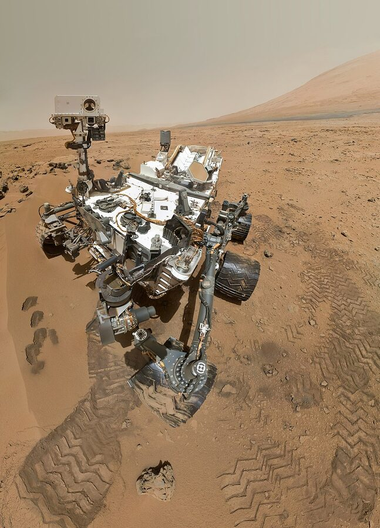

Mission Question
How do gravity, momentum, thrust, wind, and limited fuel interact during a controlled landing?
Mars Gravity
3.72 m/s² — about 38% of Earth's (9.81 m/s²). Switch to Moon or Earth in the Controls tab to compare how gravity changes your required braking burn!
Martian Wind
Mars has thin but persistent winds and seasonal gusts. Watch the animated windsock next to the pad and the live wind strip at the top center.
The Stopping-Distance Rule
A full burn pushes up harder than gravity pulls down. What is left over is your braking:
braking = thrust − g
Falling at speed v, you need this much height to slow down:
d = v² ÷ (2 × braking)
The dashed bracket under the lander draws d live. Green: plenty of room. Yellow BURN NOW: start your full burn. Red: even a full burn is too late. Double your speed and d grows four times.
Why Late Burns Save Fuel
Every second the engine runs, part of its thrust only cancels gravity. Hovering high wastes propellant just holding still; one late, steady burn (the "suicide burn") wastes the least. Tilting wastes thrust too: only the upward part of the push brakes your fall.
Try This: Three Worlds
This lander's full thrust is 11.6 m/s². On the Moon that leaves about 10 m/s² of braking, on Mars about 7.9, and on Earth only 1.8. Fall at 15 m/s on each world and watch the bracket: about 12 m, 15 m, and over 60 m. That is why real Earth rockets need far more thrust for their weight.
Landing Criteria
Touch both outer footpads on a landing pad with vertical speed < 4.0 m/s, horizontal speed < 2.5 m/s, and tilt within 12°.
The Real Thing

Curiosity rover self-portrait on Mars. Public domain, NASA/JPL-Caltech.
NASA's Curiosity rover safely landed on Mars in 2012 using a real "sky crane" descent stage — the same kind of fuel, gravity, and timing tradeoffs you manage here.
Watch the Autopilot
Press Watch Autopilot and the lander flies itself, using only the same thrust and turn controls you have. Every moment it asks three questions: how far am I from the pad, how fast am I falling, and how much room do I have to stop? It leans into the wind, stays above a cone over the pad, and falls on the braking curve v = √(2 × braking × height) so it burns as late as it safely can. Press any flight key to take over mid-flight.
Then open the Flight Log and compare its graph with yours: where did it start braking? It is not perfect. On Olympus Mons and Arcadia strong winds sometimes drain its fuel, and on Earth it never lands. Can you beat it?
How Real Rovers Land
Curiosity (2012) and Perseverance (2021) hit the top of Mars's air at about 20,000 km/h. A heat shield uses the thin air to shed most of that speed, a supersonic parachute takes it to roughly 300 km/h, and rockets do the last part, just like here. Then a "sky crane" hovers and lowers the rover on cables at under 1 m/s.
Engineers call it the "seven minutes of terror": the whole descent takes about seven minutes, but a radio signal from Mars takes over ten minutes to reach Earth. By the time mission control hears that entry has begun, the rover has already landed (or crashed). The landing computer flies alone, using the same rule as your bracket.
Flight-Test Challenge
Complete three attempts and open the Flight Log tab. The graph shows your altitude, your stopping distance, and your descent speed; press a flight's number to compare runs. Find where the dashed stopping-distance line meets the altitude line: that is the last moment a full burn could save you. Change only one variable (wind, gravity, or burn timing) between runs.
Explain Your Best Landing
Identify when you used a long burn, hover trim pulses, and rotation. Explain how each choice changed momentum and why waiting until the final second usually fails.
Exit Ticket
Mars has weaker gravity than Earth. Why does a lander still need a powered descent? Use the words velocity, force, and fuel in your answer.